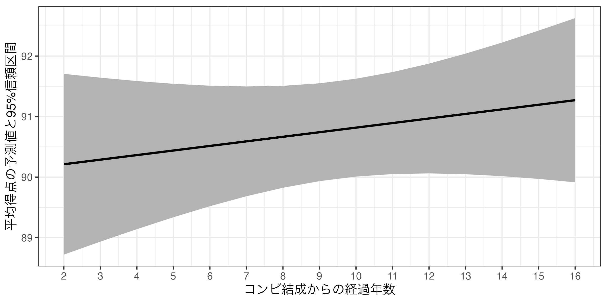
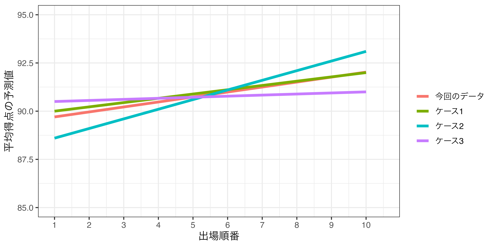
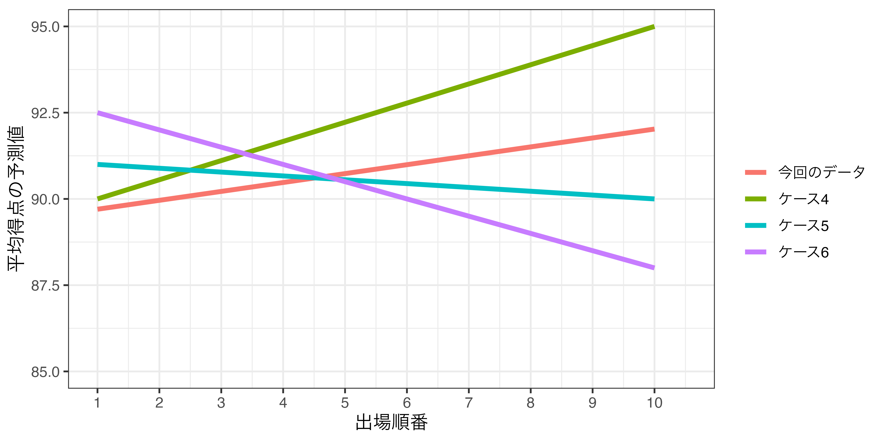
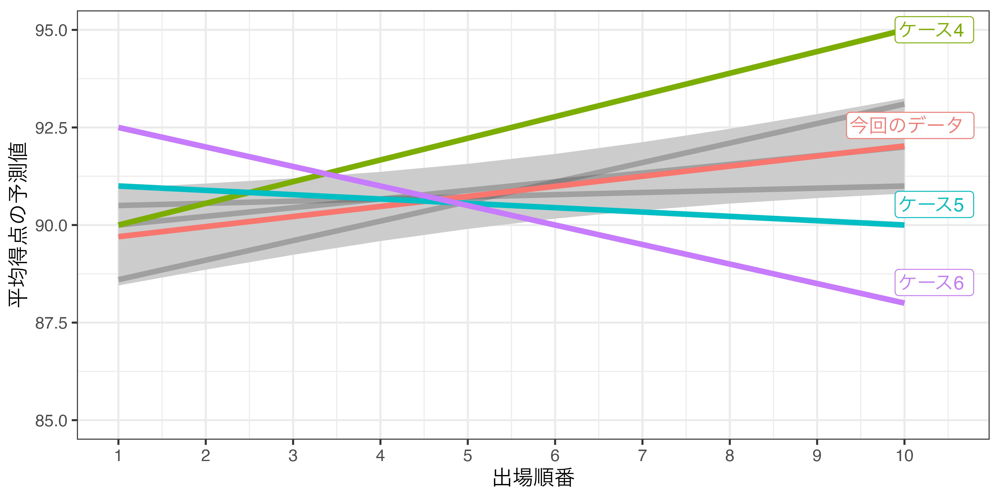

マクロ政治データ分析実習
第10回 分析結果の報告
関西大学総合情報学部
2024-11-28
授業開始前に
すぐに実習できるように準備しておきましょう。
- JDCat分析ツールを起動しておいてください。
- 本日授業用のプロジェクトを作成するか、既存のプロジェクトを開いてください。
- LMSから実習用データをダウンロードしておいてください。
- ダウンロードしてデータをプロジェクト・フォルダーにアップロードしてください。
- プロジェクト・フォルダー内に
Dataフォルダーを作成し、そこにアップロードしましょう。
- プロジェクト・フォルダー内に
- 実習用コードを入力するスクリプト、またはQuarto（or R Markdown）ファイルを開き、以下のコードを入力&実行してください（コピペ可）。
- トラブルが生じた場合、速やかにTAを読んでください。
- 時間に余裕があれば、スライド内のコードも書いておきましょう。
分析結果の報告
分析結果をどう示すか
分析手法ごとに方法は異なるが、本講義では線形回帰分析に焦点を当てる1。
- 回帰分析の結果（点推定値、標準誤差、信頼区間、\(p\)値など）
- 表（回帰表; regression table）
- 図
- 応答変数の予測値予測値
- 図
データの概要
| 変数名 | 説明 | 備考 |
|---|---|---|
No |
第X回大会 | 第13回（2017年）から |
Year |
大会年度 | |
Name |
コンビ名 | |
Duration |
結成からの経過年数 | |
First |
初出場ダミー | 1 = 初出場 / 0 = その他 |
Final |
ファイナルステージへの進出有無 | |
Order |
出場順番 | 1から10 |
Score_Mean |
平均得点 | 7人の審査委員からの評価の平均値 |
モデルの推定
- M-1グランプリにおける出場順番と得点の関係
- 平均得点（
Score_Mean）を応答変数とした線形回帰モデル fit1：出場順番（Order）のみ投入fit2：出場順番（Order）、初出場ダミー（First）を投入fit3：出場順番（Order）、初出場ダミー（First）、芸歴（Duration）を投入
- 平均得点（
表を用いた推定結果の報告
{modelsummary}パッケージの利用
使い方：modelsummary(回帰オブジェクト名)
統計量の変更
modelsummary()のestimateとstatistic引数で出力される統計量の変更が可能- デフォルトだと
estimateは点推定値（"{estimate}"）、statisticは標準誤差（"({std.error})"）になっている。- つまり、デフォルトは
modelsummary(オブジェクト名, estiamte = "{estimate}", statistic = "({std.error})")
- つまり、デフォルトは
- \(p\)値は
"{p.value}"、95%信頼区間の下限は"{conf.low}"、上限は"{conf.high}"など - 行を消したい場合は
NULLを割り当てる。 note引数で注を付けることもできる。
- デフォルトだと
標準誤差の代わりに\(p\)値を表示する（<0.001は\(p\)値が0.001より小さいことを意味する）。
点推定値と標準誤差を一行にまとめる。
点推定値と95%信頼区間を一行にまとめる。
適合度指標の変更
- 分析手法によって出力される適合度指標が異なる（
get_gof()関数で確認可）。
aic bic r.squared adj.r.squared rmse nobs F logLik
1 274.9891 285.4609 0.1437456 0.09787483 2.201864 60 3.133708 -132.4946gof_map引数で表示したい適合度指標を指定する。- 線形回帰分析なら
- サンプルサイズ（
"nobs"） - 決定係数（
r.squared） - 調整済み決定係数（
"adj.r.squared"）程度で十分
- サンプルサイズ（
- 線形回帰分析なら
| (1) | |
|---|---|
| 注：カッコ内はp値 | |
| (Intercept) | 89.605 (<0.001) |
| Order | 0.258 (0.016) |
| First | -0.963 (0.128) |
| Duration | 0.076 (0.381) |
| Num.Obs. | 60 |
| R2 | 0.144 |
| R2 Adj. | 0.098 |
複数モデルの表示
回帰オブジェクトをlist()でまとめる（"モデル名" = オブジェクト名でモデル名も指定可）。
| (1) | (2) | (3) | |
|---|---|---|---|
| (Intercept) | 90.078 | 90.570 | 89.605 |
| (0.649) | (0.684) | (1.291) | |
| Order | 0.227 | 0.245 | 0.258 |
| (0.105) | (0.103) | (0.104) | |
| First | -1.136 | -0.963 | |
| (0.590) | (0.623) | ||
| Duration | 0.076 | ||
| (0.086) | |||
| Num.Obs. | 60 | 60 | 60 |
| R2 | 0.075 | 0.132 | 0.144 |
| R2 Adj. | 0.059 | 0.101 | 0.098 |
modelsummary(list("Model 1" = fit1, "Model 2" = fit2, "Model 3" = fit3),
gof_map = c("nobs", "r.squared", "adj.r.squared"))| Model 1 | Model 2 | Model 3 | |
|---|---|---|---|
| (Intercept) | 90.078 | 90.570 | 89.605 |
| (0.649) | (0.684) | (1.291) | |
| Order | 0.227 | 0.245 | 0.258 |
| (0.105) | (0.103) | (0.104) | |
| First | -1.136 | -0.963 | |
| (0.590) | (0.623) | ||
| Duration | 0.076 | ||
| (0.086) | |||
| Num.Obs. | 60 | 60 | 60 |
| R2 | 0.075 | 0.132 | 0.144 |
| R2 Adj. | 0.059 | 0.101 | 0.098 |
変数名の変更
coef_rename引数で調整（"元の変数名" = "新しい変数名"）
modelsummary(list(fit1, fit2, fit3),
coef_rename = c("(Intercept)" = "切片",
"Order" = "出場順番",
"First" = "初出場ダミー",
"Duration" = "結成からの経過年数"),
gof_map = c("nobs", "r.squared", "adj.r.squared"))| (1) | (2) | (3) | |
|---|---|---|---|
| 切片 | 90.078 | 90.570 | 89.605 |
| (0.649) | (0.684) | (1.291) | |
| 出場順番 | 0.227 | 0.245 | 0.258 |
| (0.105) | (0.103) | (0.104) | |
| 初出場ダミー | -1.136 | -0.963 | |
| (0.590) | (0.623) | ||
| 結成からの経過年数 | 0.076 | ||
| (0.086) | |||
| Num.Obs. | 60 | 60 | 60 |
| R2 | 0.075 | 0.132 | 0.144 |
| R2 Adj. | 0.059 | 0.101 | 0.098 |
参考）回帰表の可視化
{modelsummary}のmodelplot()関数
modelplot()から作成された図は{ggplot2}ベースなので+でレイヤーの追加、調整が可能- 詳細は
?modelplotか公式ページで確認すること。他にも{coefplot}も人気（存在感のない{coefplotbl}というのもある）
回帰分析結果の可視化
可視化の手順
{marginaleffects}と{ggplot2}パッケージを使用（{ggplot2}は{tidyverse}と同時に自動的に読み込まれる）
predictions()関数で予測値を計算し、オブジェクトとして格納- 表形式オブジェクトとして格納される。
- 予測値オブジェクトの加工（ラベル付け/factor化）
- 予測値は
estimate列 - 95%信頼区間の下限と上限は
conf.lowとconf.high列
- 予測値は
- {ggplot2}を用いた作図
- 予測値 + 95%信頼区間
- 横軸上の値が少ない場合、
geom_pointrange() - 横軸上の値が多い場合、
geom_line()+geom_ribbon()
予測値の計算（fit3の場合）
- 例）初出場ダミー（
First）の値が0の場合と1の場合の、Score_Meanの予測値は?
\[ \widehat{\mbox{Score_Mean}} = 89.605 + 0.258 \cdot \mbox{Order} - 0.963 \cdot \mbox{First} + 0.076 \cdot \mbox{Duration}. \]
OrderとDurationは平均値（それぞれ5.5、10.6）に固定し、Firstだけ0と1を入れる。
計算例
- 初出場（
First = 1）の場合- 89.605 + 0.256 \(\times\) 5.5 - 0.963 \(\times\) 1 + 0.076 \(\times\) 10.6 \(\simeq\) 90.856
- 初出場ではない（
First = 0）場合- 89.605 + 0.256 \(\times\) 5.5 - 0.963 \(\times\) 0 + 0.076 \(\times\) 10.6 \(\simeq\) 91.819
- {marginaleffects}の
predictions()関数を使えば簡単に計算可能
予測値の計算（fit3利用）
- 例）初出場ダミー（
First）の値が0の場合と1の場合の、Score_Meanの予測値を計算し、fit3_pred1という名のオブジェクトとして格納
First Estimate Std. Error z Pr(>|z|) S 2.5 % 97.5 % Order Duration
0 91.8 0.436 211 <0.001 Inf 91 92.7 5.5 10.6
1 90.9 0.421 216 <0.001 Inf 90 91.7 5.5 10.6
Type: response
Columns: rowid, estimate, std.error, statistic, p.value, s.value, conf.low, conf.high, Order, Duration, First, Score_Mean Estimate列が予測値、2.5%と97.5%列が95%信頼区間の下限と上限First以外の変数は平均値に固定される。
平均値以外に固定する方法
- 例）初出場ダミー（
First）の値が0の場合と1の場合の、Score_Meanの予測値を計算し、fit3_pred2という名のオブジェクトとして格納- ただし、出場順番は5番目（
Order = 5）、結成からの年数は5年（Duration = 5）と固定する。
- ただし、出場順番は5番目（
fit3_pred2 <- predictions(fit3,
newdata = datagrid(First = c(0, 1),
Order = 5,
Duration = 5))
fit3_pred2
First Order Duration Estimate Std. Error z Pr(>|z|) S 2.5 % 97.5 %
0 5 5 91.3 0.725 126 <0.001 Inf 89.9 92.7
1 5 5 90.3 0.572 158 <0.001 Inf 89.2 91.4
Type: response
Columns: rowid, estimate, std.error, statistic, p.value, s.value, conf.low, conf.high, First, Order, Duration, Score_Mean 作図の際の注意事項
fit3_pred2で表示される列名は「本当の」列名ではない!!- ユーザーが読みやすいように列名が変更されてから出力される。
- たとえば、予測値の本当の列名は
estimateだが、表示名はEstimateになっている。
- 「本当の」列名が見たい場合は
print(オブジェクト名, style = "data.frame")
rowid estimate std.error statistic p.value s.value conf.low conf.high First Order Duration Score_Mean
1 1 91.27377 0.7253367 125.8364 0 Inf 89.85214 92.69541 0 5 5 89.42857
2 2 90.31063 0.5723738 157.7826 0 Inf 89.18880 91.43246 1 5 5 89.42857- 作図によく使うのは予測値（
estimate）、信頼区間の下限（conf.low）と上限（conf.high）、動かしている変数名（ここではFirst）
作図の例
Pointrangeプロットを使用する。

無駄の目盛りの削除
- 横軸（X軸）の無駄な目盛りを削除し、0と1のみ残す。

出場順番と平均得点間の関係（計算）
Order Estimate Std. Error z Pr(>|z|) S 2.5 % 97.5 % First Duration
1 89.7 0.637 141 <0.001 Inf 88.5 90.9 1 10.6
2 90.0 0.563 160 <0.001 Inf 88.9 91.1 1 10.6
3 90.2 0.500 180 <0.001 Inf 89.2 91.2 1 10.6
4 90.5 0.453 200 <0.001 Inf 89.6 91.4 1 10.6
5 90.7 0.425 213 <0.001 Inf 89.9 91.6 1 10.6
6 91.0 0.423 215 <0.001 Inf 90.2 91.8 1 10.6
7 91.3 0.445 205 <0.001 Inf 90.4 92.1 1 10.6
8 91.5 0.489 187 <0.001 Inf 90.5 92.5 1 10.6
9 91.8 0.549 167 <0.001 Inf 90.7 92.8 1 10.6
10 92.0 0.621 148 <0.001 Inf 90.8 93.2 1 10.6
Type: response
Columns: rowid, estimate, std.error, statistic, p.value, s.value, conf.low, conf.high, First, Duration, Order, Score_Mean 出場順番と平均得点間の関係（可視化）
芸歴と平均得点間の関係（計算）
Duration Estimate Std. Error z Pr(>|z|) S 2.5 % 97.5 % Order First
2 90.2 0.762 118 <0.001 Inf 88.7 91.7 5.5 1
3 90.3 0.691 131 <0.001 Inf 88.9 91.6 5.5 1
4 90.4 0.624 145 <0.001 Inf 89.1 91.6 5.5 1
5 90.4 0.563 161 <0.001 Inf 89.3 91.5 5.5 1
6 90.5 0.508 178 <0.001 Inf 89.5 91.5 5.5 1
7 90.6 0.462 196 <0.001 Inf 89.7 91.5 5.5 1
8 90.7 0.430 211 <0.001 Inf 89.8 91.5 5.5 1
9 90.7 0.412 220 <0.001 Inf 89.9 91.6 5.5 1
10 90.8 0.412 220 <0.001 Inf 90.0 91.6 5.5 1
11 90.9 0.430 211 <0.001 Inf 90.1 91.7 5.5 1
12 91.0 0.463 197 <0.001 Inf 90.1 91.9 5.5 1
13 91.0 0.508 179 <0.001 Inf 90.0 92.0 5.5 1
14 91.1 0.563 162 <0.001 Inf 90.0 92.2 5.5 1
15 91.2 0.625 146 <0.001 Inf 90.0 92.4 5.5 1
16 91.3 0.692 132 <0.001 Inf 89.9 92.6 5.5 1
Type: response
Columns: rowid, estimate, std.error, statistic, p.value, s.value, conf.low, conf.high, Order, First, Duration, Score_Mean 芸歴と平均得点間の関係（可視化）
折れ線グラフとリボン（geom_ribbon()）の組み合わせ
- 横軸が細かいほどpoint-rangeプロットは気持ち悪くなる（ムカデのような見た目になる）。
geom_ribbon()はx、ymin、ymaxにマッピングgeom_pointrange()と使い方は同じだが、予測値の情報を持たないため、yは不要
折れ線グラフ + リボン
fit3_pred4 |>
ggplot(aes(x = Duration)) +
geom_ribbon(aes(ymin = conf.low, ymax = conf.high), fill = "gray70") +
geom_line(aes(y = estimate), linewidth = 1) +
scale_x_continuous(breaks = 2:16, labels = 2:16) +
labs(x = "コンビ結成からの経過年数", y = "平均得点の予測値と95%信頼区間") +
theme_bw(base_size = 12)- 1
-
geom_ribbon()とgeom_line()は同じ横軸を共有するため、ここでマッピングした方が効率的 - 2
- デフォルトのリボンは暗い色なので、明るめの色に変える。
- 3
-
linewidthで折れ線グラフの太さを調整（1だとデフォルトよりやや太め）

結局、信頼区間とは何なのか
出場順番と平均得点間の関係
今回得られた回帰直線

もう一度、過去に戻ってM-1をやったら…（1）
こんな回帰直線が得られたとしてもおかしくはない（多分）

もう一度、過去に戻ってM-1をやったら…（2）
こんな回帰直線が得られる可能性は非常に低い（多分）

信頼区間の意味
この範囲（信頼区間）外の直線が得られる可能性は非常に低い！

信頼区間の意味（2）
傾き係数が正（負）に統計的有意であれば、この区間内に引ける直線は必ず右上がり（右下がり）となる。
- \(\alpha\) = 0.05で統計的有意だった
Order（\(p\) = 0.016）は、95%信頼区間内に右上がりの直線しか引けない。 - 右は統計的に有意でない
Duration変数の例（\(p\) = 0.381）- 水平線も、右上がり直線も、右下がり直線も引ける。
- \(\Rightarrow\)
DurationとScore_Meanの関係は現段階では判断できない。
- \(\alpha\) = 0.1を仮定するのであれば、90%（\(= (1 - \alpha) \times 100\)）信頼区間を使うこととなる。
有意水準と信頼区間
（ありえないが、）\(\alpha\) = 0.6を採用する場合、40%信頼区間（\((1 - \alpha) \times 100\)%信頼区間）を使うことになる。
- 以下は40%信頼区間を採用した例（
predictions()内にconf_level = 0.4を追加する）- ただし、よく使うのは90%（\(\alpha\) = 0.1）、95%（\(\alpha\) = 0.05）、99%（\(\alpha\) = 0.01）信頼区間